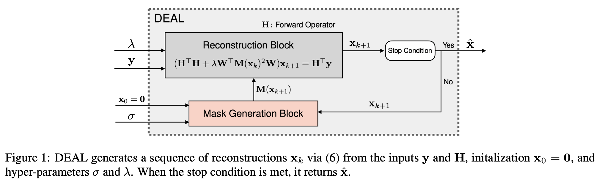
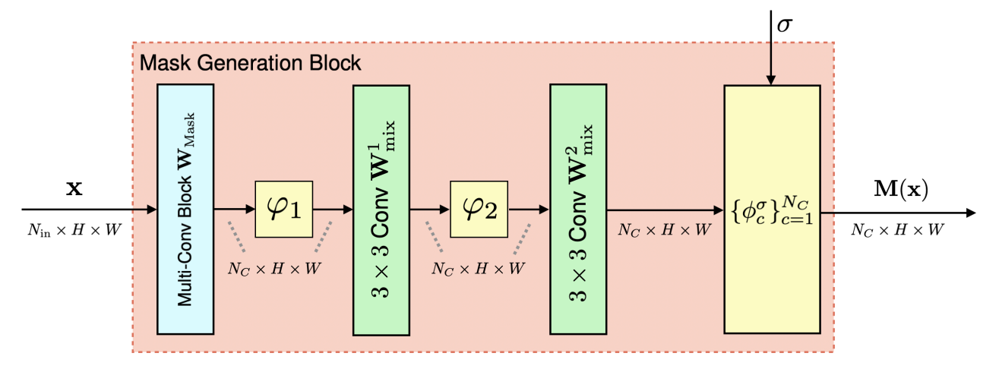
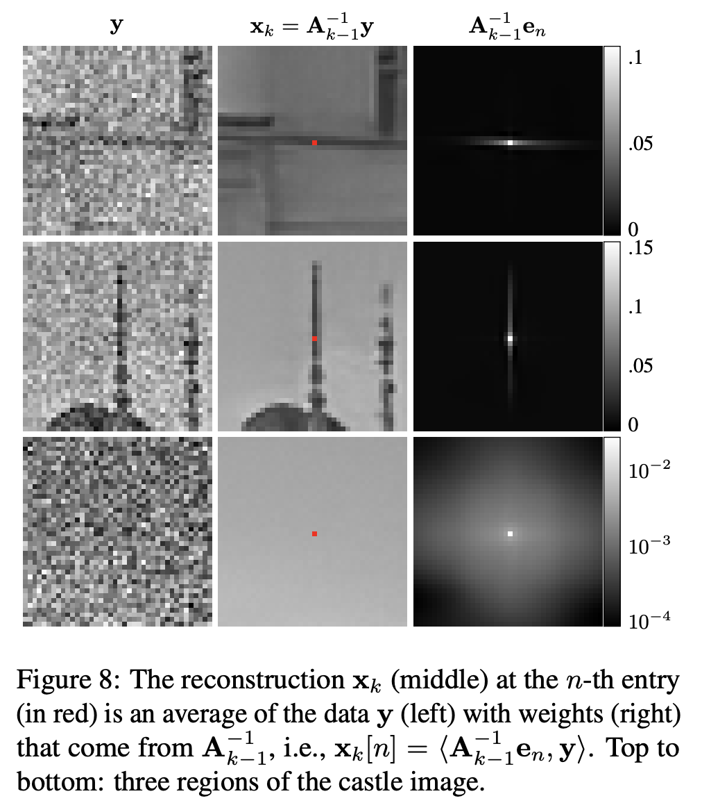

DEAL: Deep Attentive Least Squares for Image Reconstruction
DEAL is a novel image reconstruction framework that combines the interpretability of classical methods with the performance of deep learning. It builds on iterative refinement and attention-based regularization, resulting in an interpretable and robust architecture.
Key Highlights
- Interpretability: DEAL explicitly visualizes how attention is distributed across the image domain.
- Universality: Same architecture applies across different inverse problems with minimal hyperparameter tuning.
- ~SOTA Performance: DEAL reaches reconstruction performance on par with leading PnP approaches with 30× fewer parameters.
Architecture Overview

Figure 1: DEAL generates a sequence of reconstructions using iterative updates that alternate between reconstruction and attention-based mask generation.
Attention Mechanism

Figure 2: The mask generation block uses a shallow CNN to estimate pixel-wise attention masks that modulate the regularization strength.
Interpretability

Figure 8: Each pixel in the reconstructed image is a weighted average of the noisy measurement, with spatial weights adapted to image structure. This offers a powerful visual interpretation of how DEAL performs its reconstruction.
For more information and code, visit the GitHub repository.
Citation
@article{pourya2025dealing,
title={DEALing with Image Reconstruction: Deep Attentive Least Squares},
author={Pourya, Mehrsa and Kobler, Erich and Unser, Michael and Neumayer, Sebastian},
journal={arXiv preprint arXiv:2502.04079},
year={2025}
}